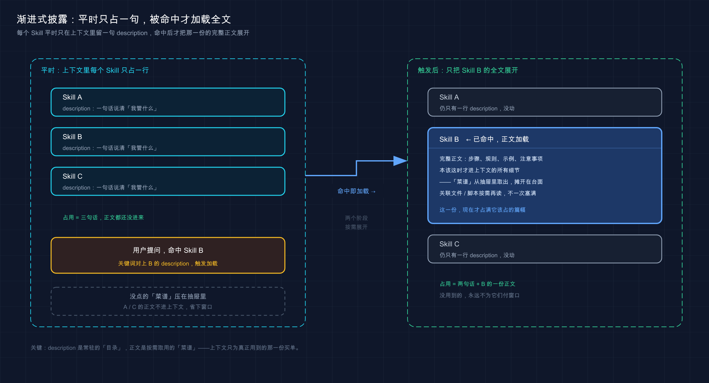

📚 系列导航：上一篇 25 记忆系统 讲的是「被动记住事实」——把项目的偏好、约定写进
CLAUDE.md，让 Claude 别每次都问一遍。这一篇换个方向，聊「主动封装能力」：把一整套操作步骤打包成 Agent Skills，让 Claude 在该用的时候，自己调出对应的那身本事。
「Skill 不就是个 slash 命令换了个名字吗？我打 /deploy 它就跑部署，跟以前 .claude/commands/deploy.md 有啥区别？」
「区别大了。slash 命令是你主动喊它才动；Skill 你可以不喊——Claude 一看你这活儿对得上，自己就把它调出来了。而且它平时只占你一句话的位置，用到才展开全文。」
「……自己调出来？那不就乱套了，我哪知道它什么时候会动？」
这是个很常见的误解，我自己刚上手那会儿就这么想的——把已有的 commit.md 命令塞进 .claude/skills/ 里，跑起来跟以前一模一样，我还纳闷「这不就换了个文件夹吗」。后来才反应过来，问题就卡在：把 Skill 当成 slash 命令的马甲。其实官方早就把自定义命令并进了 Skills 体系——你那些 .claude/commands/ 文件照样能用，但 Skill 多了三样东西：能带配套文件、能由 Claude 按需自动触发、平时几乎不占上下文。
官方原话：「自定义命令已合并到 skills 中。
.claude/commands/deploy.md中的文件和.claude/skills/deploy/SKILL.md中的 skill 都会创建/deploy并以相同的方式工作。」
这一篇，我把 Skill 到底是什么、凭什么能「自己调出来」还不撑爆上下文、从哪来、怎么触发，一次给你讲透。
看完这一篇，你会拿到：
- Skill 到底是什么——一个
SKILL.md加配套资源，怎么就成了 Claude 的一项本事 - 它如何「按需加载」（渐进式披露）：为什么平时只占一句话、用到才展开，省上下文的秘密全在这
- Skill、slash 命令、Subagent 三者定位差在哪，一张表分清（完整决策留到第 30 篇）
- Skill 从哪来（内置、插件带、自己写）、放在哪个目录决定谁能用
- 怎么触发（靠 description 自动匹配，不用背命令）、怎么查当前有哪些可用
01 先搞懂：Skill 到底是个什么东西
先给结论：一个 Skill，本质就是一个叫 SKILL.md 的说明文件，外加几个可选的配套文件，打包成一身「专项本事」交给 Claude。
类比：手机里的快捷指令。 你在 iPhone「快捷指令」里编一个「回家模式」——开灯、调空调、放音乐，编好之后你不用再一步步手动操作，喊一句「回家模式」，它就按你排好的顺序自动跑完。Skill 干的是同一件事：你把一套固定流程（比如「总结未提交的改动并标出风险」）写进 SKILL.md，之后这套流程就成了 Claude 随手能调的一个动作，你不用每次把步骤重新敲一遍。
SKILL.md 长什么样？就两部分，官方文档说得很清楚（这个例子存在 ~/.claude/skills/summarize-changes/SKILL.md，目录名 summarize-changes 就是你以后输入的命令名）：
---
description: 总结未提交的改动并标出风险。当用户问改了啥、想要提交信息、或让我审查 diff 时使用。
---
## 当前改动
!`git diff HEAD`
## 说明
把上面的改动用两三个要点概括，再列出你注意到的风险，比如缺失的错误处理、写死的值、需要更新的测试。如果 diff 是空的，就说没有未提交的改动。
上面那个 --- 框起来的部分叫 YAML frontmatter（前置元数据，写在文件开头两道 --- 之间的配置区），它告诉 Claude 这个 Skill 是干啥的、啥时候该用；下面的 markdown 正文，是 Claude 真正调用时要照着做的说明。
注意中间那行 !`git diff HEAD`——这是个挺妙的设计，叫动态上下文注入：Claude Code 会先把这条命令跑了，把它的输出替换到这一行，然后 Claude 才看到 Skill 内容。所以 Claude 拿到手的不是「去跑个 diff」，而是已经填好的、你此刻真实的改动。这是预处理，不是 Claude 自己执行的。
一个 Skill 不止 SKILL.md 一个文件，它是个目录。官方给的标准长相是这样：
my-skill/
├── SKILL.md # 主说明（必需）
├── template.md # 让 Claude 填的模板
├── examples/
│ └── sample.md # 给它看的示例输出
└── scripts/
└── validate.sh # 它可以执行的脚本
只有 SKILL.md 是必需的，其余都可选。这就是 Skill 比老式 slash 命令强的地方：能带模板、带示例、带脚本——脚本可以是任何语言，Claude 负责编排，脚本干重活。
三个真实场景，你立刻能想到 Skill 能干嘛：
- 你每次让 Claude 提交代码，都要叮嘱「先跑测试、再写中文 commit、前缀用 feat」——把这套写进一个
commitSkill，以后一句话搞定。 - 团队约定了一套 API 写法（RESTful 命名、统一错误格式、必带校验）——写成一个
api-conventionsSkill，谁写接口它自动按这套来。 - 你想生成一张代码库的可视化结构图——官方那个
codebase-visualizerSkill 捆了个 Python 脚本，跑完直接在浏览器里打开交互式树图。
💡 一句话总结：Skill 就是「
SKILL.md（说啥时候用 + 怎么做）+ 可选配套文件」打成一包的一身本事——写一次，之后 Claude 随手就能调，还能捆模板和脚本。
02 命门：渐进式披露，省上下文的秘密
这是整篇最该吃透的一节。Skill 凭什么能塞一大堆，却几乎不占你的上下文？ 答案就一个词：渐进式披露（progressive disclosure，意思是「按需逐步展开」，不相关时不加载全文）。
先说为什么这事关键。前面 19 上下文管理 讲过，Claude 的「工作台」就那么大，塞进去的每一个字都在花预算、都在挤占它思考的余地。如果每个 Skill 的全文一开会话就全堆进去，装十个 Skill 你的工作台就废了一半。
类比：餐厅的菜单和后厨。 你坐下来，服务员先递给你一张菜单——每道菜就一行菜名加一句简介，你扫一眼就知道有什么。你点了「宫保鸡丁」，后厨那张写满步骤的详细菜谱才被翻出来照着做。没点的菜，菜谱一直压在抽屉里，不占你桌上一寸地方。Skill 就这么运作：
- 平时：Claude 只看得到每个 Skill 的那一句
description（菜单上的菜名）。 - 相关时：你问的事对上了某个 description，那个 Skill 的完整正文才被加载进来（翻出对应菜谱）。
官方把这条规则讲得很直白：
在常规会话中，skill 描述被加载到上下文中，以便 Claude 知道什么可用，但完整 skill 内容仅在调用时加载。
所以你可以放心大胆地往 Skill 正文里写长篇参考资料、详细检查清单——用到之前，它几乎不花成本。这正是官方建议「把内容做成 Skill 而不是全塞进 CLAUDE.md」的原因：CLAUDE.md 是一开会话就全程驻留的，Skill 正文是用到才来。

这张图把「渐进式披露」两阶段画清楚了：左边是会话常态——三个 Skill 在上下文里各只占一句 description，工作台还很空；右边是某个 description 被你的提问命中后，只有那一个 Skill 的完整正文被加载进来，其余两个仍然只是一行。一眼看出「省」在哪。
不过有个配套的代价你得知道，否则会踩坑：一旦 Skill 被加载，它的正文会在整场会话里一直驻留——Claude 不会在后续每一轮重新读它。官方原话：
当你或 Claude 调用一个 skill 时，呈现的
SKILL.md内容作为单个消息进入对话，并在会话的其余部分保持在那里。
这意味着两件事：第一，Skill 正文里每一行都是一次重复的 token 成本，别灌水，官方建议把 SKILL.md 控制在 500 行以内，长参考拆到单独文件按需加载；第二，写「常驻说明」而不是「一次性步骤」——因为它全程都在，要写成「整个任务都适用的指导」，而不是「第一步做 X」这种用完就过期的。
这里有个相关的小跟头我自己实打实栽过：写了个 Skill，前几轮还照着做，聊到后面死活感觉「它好像把这套说明忘了」，我第一反应是加载失败、还反复重启 Claude 想让它重新读一遍。翻了官方才明白——内容通常还在，是模型转头去选别的工具了。解法是把 description 和说明写更明确、让它继续偏向这个 Skill，而不是怀疑加载机制。
💡 一句话总结：渐进式披露 = 平时只露一句 description、用到才展开全文，所以装再多 Skill 也不撑上下文；但展开后会全程驻留，正文务必精简、写成常驻说明。
03 Skill、slash 命令、Subagent：到底差在哪
开头那场争论的核心，就是这一节。很多人把这三个搅在一起，其实定位完全不同。这里我先把最容易混的点掰开，完整的「该选哪个」决策表留到第 30 篇，这节只做到「分得清」。
先把三个名词对齐一下：
- slash 命令：你输入
/xxx主动触发的一段操作。 - Skill：一身打包好的本事，你能主动喊、Claude 也能按需自动调。
- Subagent（子代理）：一个独立上下文的子助手，主对话把任务委派给它，它在自己的小世界里干完再把结果带回来（前面 23 子代理 详谈过）。
这里有个关键认知，专门破开头那个误解：slash 命令和 Skill 不是对立关系，slash 命令其实是 Skill 的一种调用方式。官方把自定义命令并进了 Skills——你建一个 commit Skill，它天然就能用 /commit 调。真正的区别不在「叫什么」，而在谁能发起、占不占上下文：
| 维度 | slash 命令（老式 .claude/commands/） |
Skill | Subagent |
|---|---|---|---|
| 谁能发起 | 只有你（打 / 触发） |
你 + Claude 都能（可自动触发） | 主对话委派 |
| 跑在哪个上下文 | 当前对话里 | 当前对话里（默认） | 独立的子上下文 |
| 平时占不占上下文 | —— | 只占一句 description | 不占（按需起） |
| 能带配套文件吗 | 不能 | 能（模板 / 脚本 / 示例） | 看其自身定义 |
| 最适合 | 你想手动控制时机的固定操作 | 让 Claude 该用就用的专项能力 | 隔离地跑独立、重的子任务 |
看懂这张表，开头的争论就化解了：那种「slash 命令」的理解是 Skill 的手动触发档；它没意识到同一个 Skill 还能让 Claude 自动触发。
那「自动触发」会不会乱套？不会，因为你能精确控制谁有权调用它。官方给了两个 frontmatter 开关：
disable-model-invocation: true：只有你能调。用于有副作用、你想亲手掐时机的活儿——比如/deploy、/commit、发 Slack 消息。你肯定不希望 Claude「看你代码像是写好了」就自作主张部署了。user-invocable: false：只有 Claude 能调。用于那种「背景知识」型的 Skill——比如一个解释老系统怎么跑的legacy-system-context，Claude 该用时知道就行，但/legacy-system-context对你来说不是个有意义的命令。
所以「乱套」是可控的：怕它乱动手的，加 disable-model-invocation: true 锁成纯手动；这正是上面那个误解里该用的招。
💡 一句话总结：slash 命令是 Skill 的手动触发档、Subagent 是独立上下文的子助手——三者定位不同；怕 Skill 自动乱动，就用
disable-model-invocation: true锁成只能你喊。
04 Skill 从哪来：内置、插件带、自己写
知道是什么了，那 Skill 从哪儿冒出来的？三个来源，由近到远。
来源一：内置（捆绑）Skill——开箱就有，每次会话都在。 Claude Code 自带一批捆绑 Skill，不用你装。官方列的有 /code-review（审代码）、/debug（调试）、/batch（批处理）、/loop（循环跑）、/claude-api（Claude API 参考）等。还有三个配套干「跑起来验证」的：/run（启动并驱动你的应用看改动有没有效）、/verify（构建并运行确认改动按预期工作）、/run-skill-generator（教前两个怎么构建启动你的项目）。这些你打个 / 就能在菜单里看到。
注意：捆绑 Skill 和
/help、/compact那种内置命令不是一回事。内置命令直接执行固定逻辑；捆绑 Skill 是基于提示的——给 Claude 一份详细说明，让它用自己的工具去编排完成。调用方式一样，都是打/加名字。
来源二：插件附带——装个插件，Skill 跟着一起来。 前面 24 插件 讲过，插件能打包一堆扩展。Skill 就是插件能带的东西之一：插件里建个 skills/ 目录，启用插件的地方这些 Skill 就可用了。插件 Skill 用 插件名:skill名 的命名空间（比如 /my-plugin:review），所以它永远不会跟你自己的 Skill 撞名。
来源三：自己写——这才是 Skill 的主场。 你把反复粘贴的那套说明、检查清单、多步流程写成一个 SKILL.md，它就成了你专属的本事。官方给的判断标准很实用：
当你不断将相同的说明、检查清单或多步骤程序粘贴到聊天中时，或者当 CLAUDE.md 的一部分已经演变成程序而不是事实时，创建一个 skill。
这句话点破了 Skill 和 CLAUDE.md 的分工，跟上一篇正好接上：CLAUDE.md 装「事实」（这项目用什么技术栈、有什么约定），Skill 装「程序」（这件事分几步怎么做）。你发现自己在 CLAUDE.md 里写起了「第一步……第二步……」，那部分就该挪进 Skill。
下面这张表帮你对号入座：
| 你的处境 | ❌ 别再这么干 | ✅ 该上 Skill |
|---|---|---|
| 每次提交都叮嘱同一套流程 | 每次手动把步骤敲一遍 | 写个 commit Skill，一句话调 |
| 团队有固定 API 写法 | 塞进 CLAUDE.md 全程占上下文 |
写成 Skill，用到才加载 |
| 想要某种可视化报告 | 每次描述一遍要啥图 | 捆个生成脚本的 Skill |
💡 一句话总结：Skill 三个来源——内置捆绑（开箱即用）、插件附带（装啥带啥）、自己写（主场）；判断要不要自己写就一条：你是不是在反复粘同一套步骤。
05 放哪决定谁能用 + 怎么触发、怎么查
最后这节落到最实操的三件事：自己写的 Skill 放哪、它怎么被触发、怎么看现在手上有哪些。
放在哪个目录，决定谁能用它
这是官方的位置表，放错地方 = 该用的人用不上，照抄就行：
| 范围 | 放哪 | 谁能用 |
|---|---|---|
| 个人 | ~/.claude/skills/<skill-name>/SKILL.md |
你的所有项目 |
| 项目 | .claude/skills/<skill-name>/SKILL.md |
仅当前这个项目 |
| 插件 | <plugin>/skills/<skill-name>/SKILL.md |
启用该插件的地方 |
| 企业 | 见托管设置 | 组织里所有人 |
逻辑很直观：只有你自己用、跨项目通用的（比如你个人的 commit 习惯），放个人级 ~/.claude/skills/；这个项目专属、想让团队都用的（比如本项目的部署流程），放项目级 .claude/skills/ 并提交到版本库。
同名时谁赢？官方规定的优先级是 企业 > 个人 > 项目（插件因为带命名空间，不参与抢名）。还有一条安全提示值得划重点：项目级 Skill 提交进仓库后，别人拉下来要先过「工作区信任」对话框——因为 Skill 里的 allowed-tools 能给自己授权一批工具，信任仓库前先看看项目里的 Skill 写了啥，别被一个来路不明的 Skill 偷偷开了权限。
怎么触发：靠 description 自动匹配，不用背命令
这是 Skill 最舒服的一点：你不用记 /什么什么，正常说人话就行。Claude 会拿你说的话去比对每个 Skill 的 description，对上了就自动把那个 Skill 调出来。
拿第 01 节那个 summarize-changes Skill 举例，它 description 里写了「当用户问改了啥……时使用」，所以两种方式都能触发它：
我改了什么？
/summarize-changes
第一种是让 Claude 自动调（你压根没提 Skill 名，它自己匹配上了）；第二种是直接喊名字。日常更推荐第一种——说需求就行，触发交给它。这也反过来告诉你写 Skill 时 description 有多重要：description 里得包含「用户会自然说出口的关键词」，它才匹配得准。官方排查「Skill 没触发」的第一条就是查这个：
检查描述是否包含用户会自然说的关键字。
怎么查：当前到底有哪些 Skill 可用
装了一堆、内置一堆，怎么知道现在手上有啥？最直接一句话问它：
现在有哪些 Skill 可用？
它会把当前所有可用的 Skill 列给你。这也是官方排查 Skill 问题的标准动作之一——先确认它到底在不在列表里，再谈触发。另外打 / 调出命令菜单也能看到能手动调的那些，/doctor 则能帮你查「Skill 描述是不是因为装太多被截断了」（装的 Skill 多到一定程度，描述会被压缩以省字符预算，可能把匹配用的关键词削掉）。
💡 一句话总结：个人级放
~/.claude/skills/、项目级放.claude/skills/，同名时优先级：企业 > 个人 > 项目；触发靠 description 自动匹配、不用背命令；一句What skills are available?就能查当前有哪些。
06 动手：5 分钟看清「自动触发」和「渐进式披露」
光看不练记不住。下面这套最小操作，不写任何复杂脚本，就让你亲眼看到两件事：Skill 怎么被一句话自动触发、它平时怎么只占一行。全程在一个空目录就能跑。
第一步：建个人级 Skill 目录（Mac / Linux）
mkdir -p ~/.claude/skills/explain-self
Windows 用户：在 C:\Users\你的用户名\.claude\skills\ 下新建 explain-self 文件夹即可。
预期：~/.claude/skills/ 下多了个 explain-self 空目录。
第二步：写一个最简单的 SKILL.md
用你顺手的编辑器，把下面内容存到 ~/.claude/skills/explain-self/SKILL.md：
---
description: 用大白话解释一段代码或一个报错。当用户说「这段代码啥意思」「这个报错咋回事」「帮我读读这个」时使用。
---
## 说明
把用户给的代码或报错，用初学者能懂的大白话讲清楚：
1. 这东西整体在干啥（一句话）
2. 逐行 / 逐段拆开说
3. 如果是报错，指出最可能的原因和怎么改
不要堆术语，能用生活类比就用。
注意它的 description 特意写了「这段代码啥意思」「这个报错咋回事」这些你真会说出口的话——这就是自动触发的钩子。
预期：explain-self 目录里有了一个 SKILL.md。
第三步：启动 Claude 并确认它认得这个 Skill
claude
进去后敲：
现在有哪些 Skill 可用？
预期：返回的可用 Skill 列表里，能看到 explain-self，旁边是你写的那句 description。看到它在列表里 = Skill 已被正确加载。（这一步还顺带印证了渐进式披露：此刻上下文里只有它这一句 description，正文那几行说明还没被加载进来。）
第四步：不喊名字，用「人话」触发它
故意不打 /explain-self，而是说一句对得上 description 的话：
这段代码啥意思：print(sum([1,2,3]) / len([1,2,3]))
预期：Claude 会自动调用 explain-self 这个 Skill（你能在它的回应里看到 Skill 被触发的提示），然后按你写的三步——先一句话说整体（算这三个数的平均值）、再逐段拆、术语少——来解释。它没等你喊命令就调出了对应本事，这就是自动触发。
第五步：对比直接喊名字
再试一次手动档，直接打：
/explain-self 这个报错咋回事：ZeroDivisionError: division by zero
预期：同样触发这个 Skill，效果和第四步一致——区别只在于这次是你主动喊的。两条路通向同一身本事，正好印证第 03 节那张表里「你 + Claude 都能发起」。
跑通这五步，你就把 Skill 最核心的两件事——「描述匹配自动触发」和「平时只占一句 description」——亲手验证了一遍。
💡 一句话总结：建
~/.claude/skills/explain-self/SKILL.md、用What skills are available?确认加载、再用「人话」和/名字各触发一次——亲眼看到自动触发和手动触发通向同一身本事，比记十条文档都实在。
07 小结
这一篇把 Agent Skills 从「是什么」到「怎么用」捋了一遍——它让 Claude 不再是张白纸，而是带着一身能按需调出的专项本事上岗。
核心要点串起来回顾：
| 你想搞清的事 | 答案 | 关键点 |
|---|---|---|
| Skill 是什么 | SKILL.md + 可选配套文件打成一包 |
frontmatter 说何时用，正文说怎么做 |
| 为什么不撑上下文 | 渐进式披露 | 平时只露一句 description，用到才展开全文 |
| 和 slash / Subagent 差在哪 | 定位不同 | slash 是手动档、Subagent 是独立上下文（决策表见第 30 篇） |
| Skill 从哪来 | 内置 / 插件带 / 自己写 | 反复粘同一套步骤 = 该自己写了 |
| 放哪、怎么触发、怎么查 | 目录决定范围 | description 自动匹配；现在有哪些 Skill 可用？ 查 |
你现在应该能： 说清楚一个 Skill 由什么组成、它凭「渐进式披露」省上下文的原理；分得清 Skill、slash 命令、Subagent 各自的定位；知道 Skill 的三个来源、放在哪个目录决定谁能用；并且明白触发它靠的是 description 自动匹配、不用背命令。这套「按需调出专项能力」的本事，是你把 Claude 从「通用助手」调教成「懂你这套活儿的专家」的关键一步。
下一篇 27「Skills 使用实例」——这一篇全是概念和机制，下一篇真刀真枪：带你从零装一个真正有用的 Skill，亲手触发它、看着它把活儿干完。想想看，你日常哪件事是反复跟 Claude 叮嘱同一套流程的？下一篇我们就拿这类活儿开刀，把它封成一个一句话就能调的本事。